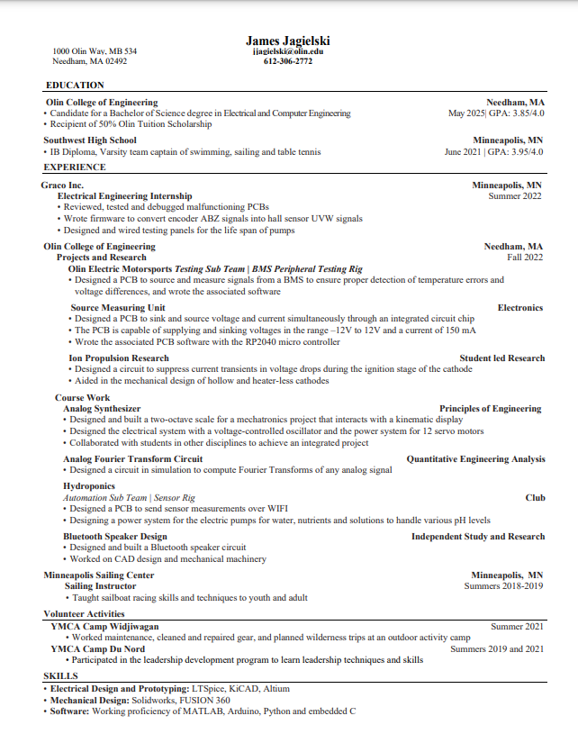

Multiverse
by HTML5 UP
About
About Me

Resume
Source Measuring Unit
Analog Fourier Transform
Principles of Engineering
Gauntlet
Manuscript Astrostats
PIE 3D Scanner
line follower robot
ROBO detailed paper
QEA Boat Project
Hydroponics
Interactive Program
Hall Effect Thruster
Bluetooth Speaker